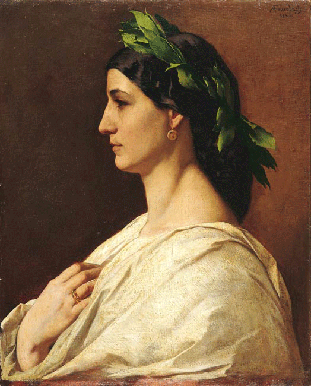

Jana Staltmayer
work
about
contact

Anselm Feuerbach, Poesie, zweite Fassung
education
2016-2017
HTW Berlin
bachelor programme communication design
2015-2016
TU Berlin
bachelor programme technical environmental protection
2012-2014
Deutsche Schule Shanghai
Abitur
2006-2012
Otto-von-Taube Gymnasium
secondary education
2002-2006
Josef-Dosch Grundschule
primary education
work
2017-2017
Flüchtlingsheim Spandau
non-salary graphic designer
2016-2016
Pamono Berlin
working student in design sourcing and customer service
2016-2016
Pamono Berlin
internship design sourcing and graphic design
2014-2015
biokultur Stockdorf
fulltime employment, staff manager
2011-2012
Backhaus Cramer
sales-person